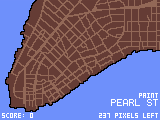
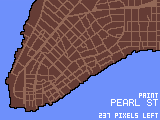

Paint Manhattan Circa 1799 is a web-based game to help players learn the history of Manhattan, as told by its streets.
You can dive in here or learn how to play first.
This is great for beginners, and introduces the streets in an order that roughly follows the history of New York City.
This mode randomizes the order of streets.
This mode removes the street grid, forcing you to paint with only the landmass as your guide.
The game is played by “painting” the streets of the city: you are prompted with the name of a street to draw, which appears at the bottom-right corner of the screen. Drag your finger (or mouse) along the path of the street to paint it:
Once you are done painting the street, you can release your finger, and will be given another street to paint.
It’s fine if you don’t know where a street is! In fact, beginners can just wave their finger or mouse all over the screen to reveal the street:
You are free to play the game like this forever, or you can try to learn where each street is. At some point a game mode may be introduced to reward accuracy, but for now surgical precision is a self-imposed challenge.
This game doesn’t really have a god mode, but it does have a debug panel, which can be used to create a custom game that plays your way.
This game was created by Atul Varma. See the game’s GitHub README for more details.